프로그램 알아보기
VS Code·Codex·Python·Jupyter가 맡는 일
퀀트 트레이딩과 코딩 에이전트 입문
다음 실습을 위해 프로그램을 설치하고 작업 폴더를 준비합니다
과정 1 · 영상 3
VS Code·Codex·Python·Jupyter가 맡는 일
강의용 폴더를 만들고 VS Code에서 열기
Codex와 Python 가상 환경 설치
Jupyter에서 짧은 코드 실행
VS Code 안에서 Codex로 작업하고 Python·Jupyter로 코드를 실행합니다
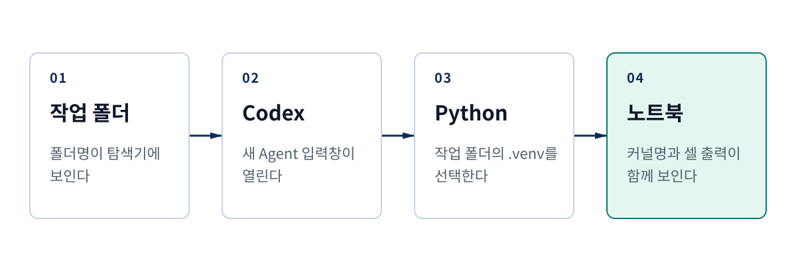
설치가 끝났는지 프로그램별로 하나씩 확인해 봅니다
강의용 폴더가 보인다
폴더 옆에 빈 입력창이 열린다
.venv가 선택돼 있다
코드 아래에 결과가 나온다
상세 리포트 표 1
달라지는 부분만 하나씩 짚어봅니다
공식 설치 파일 · py 또는 python
기종에 맞는 설치 파일 · python3
공식 패키지 · python3
상세 리포트 표 2 · VS Code·Codex·Python·Jupyter는 세 운영체제에서 사용할 수 있습니다
1. 작업 폴더 준비
앞으로 만들 파일과 Python 환경을 한곳에 모읍니다
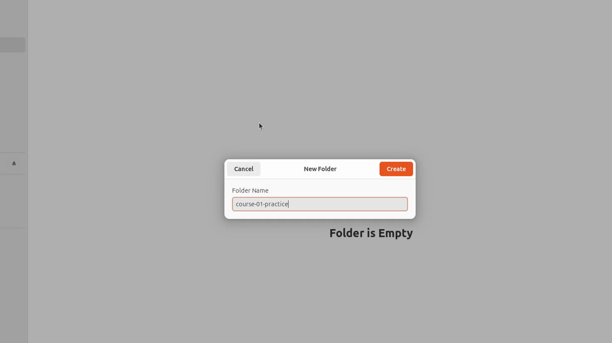
다음 실습부터 이 안에 파일을 만들 예정입니다
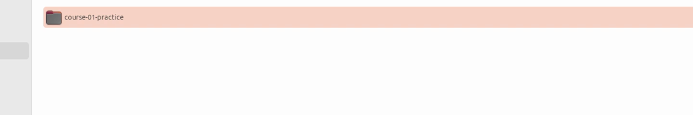
VS Code에서 방금 만든 폴더를 열어 보겠습니다
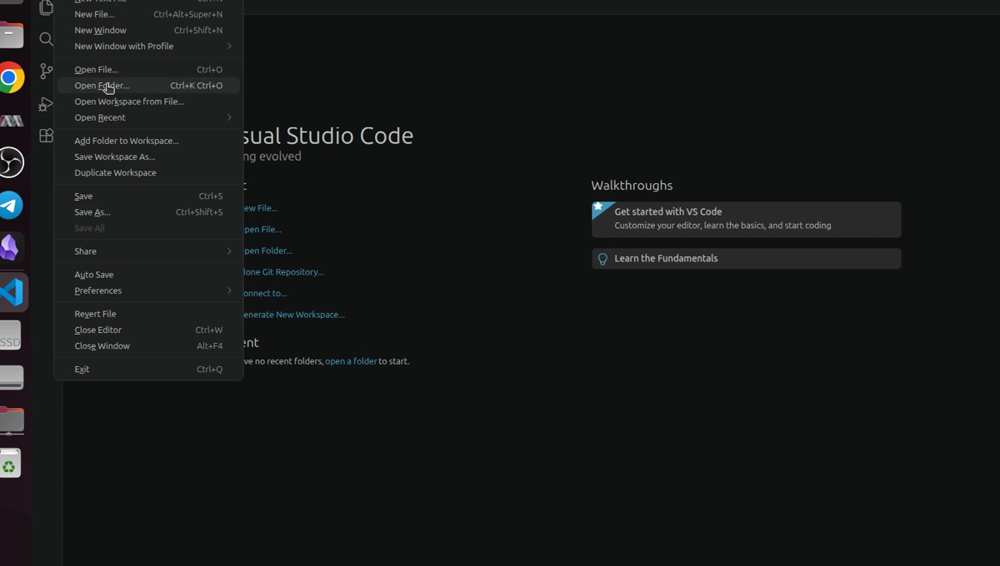
course-01-practice를 선택하고 오른쪽 아래 버튼을 누릅니다
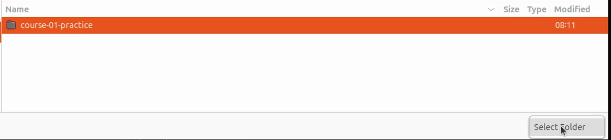
인터넷에서 받은 낯선 폴더라면 먼저 내용을 확인해야 합니다

COURSE-01-PRACTICE가 보이면 실습할 위치가 정해졌습니다
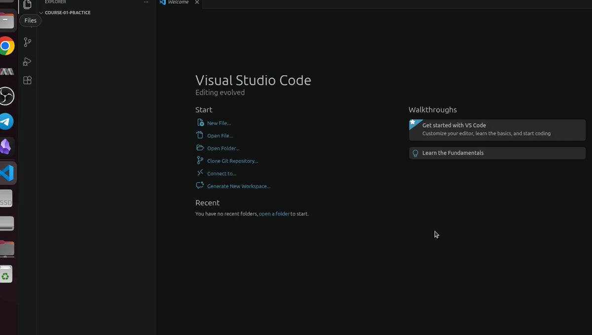
2. 코딩 에이전트 준비
게시자와 확장 기능 식별자를 함께 확인합니다
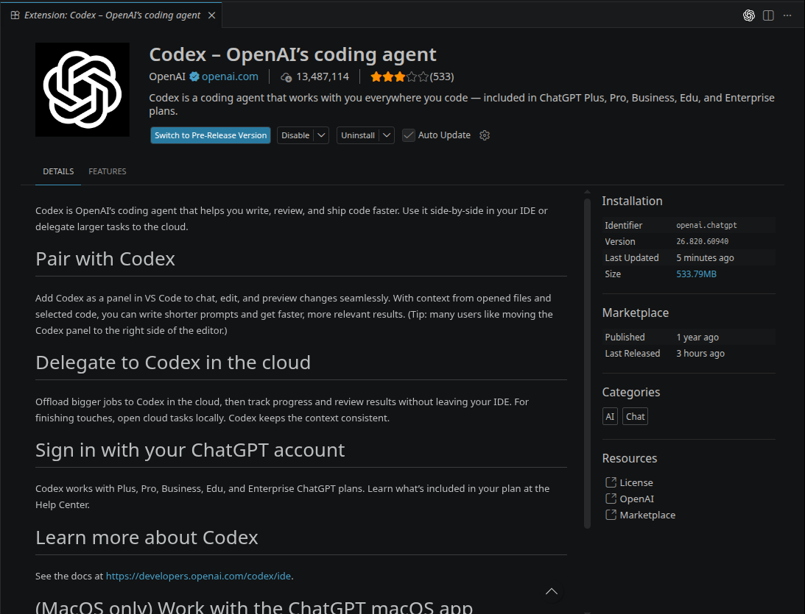
버전 번호는 업데이트에 따라 달라질 수 있습니다
로그인 화면은 녹화하지 않고 빈 입력창부터 보여 줍니다
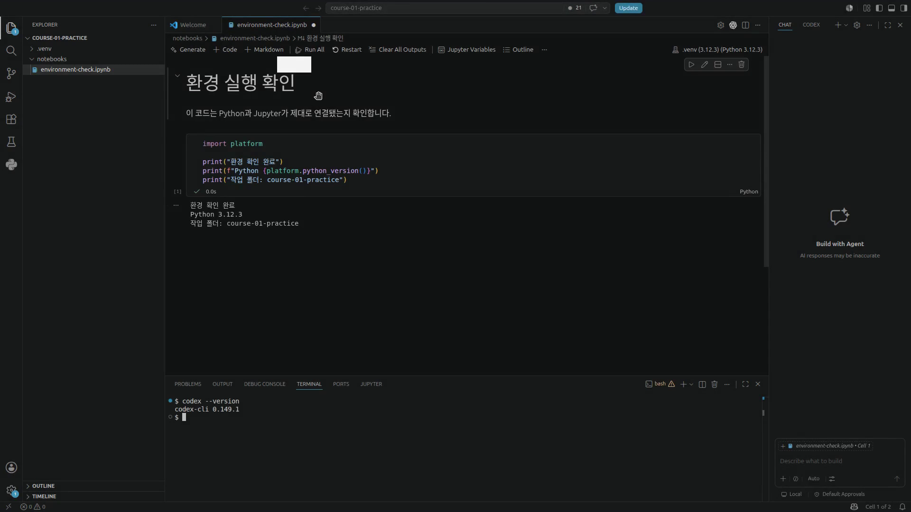
다음 실습에서는 파일 변화를 보기 쉬운 VS Code 확장 기능을 사용합니다
VS Code 확장 기능
Codex CLI
codex-cli와 버전 번호가 나오면 설치가 끝난 것입니다
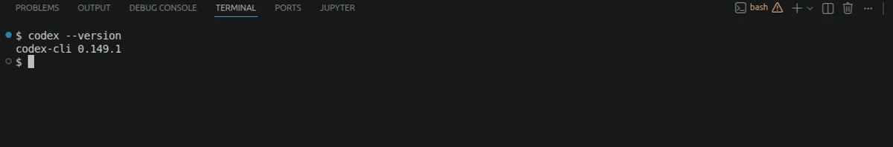
설치 명령은 실행 시점의 OpenAI 공식 문서에서 다시 확인합니다
3. Python과 Jupyter 준비
네 용어가 각각 무엇을 가리키는지 살펴봅니다
앞으로 퀀트 코드를 작성할 프로그래밍 언어
Python 코드를 읽고 실행하는 프로그램
프로젝트별 Python 도구를 따로 모아 둔 공간
이번 강의에서 가상 환경 폴더에 붙인 이름
코드와 노트북이 같은 Python 환경을 사용해야 합니다
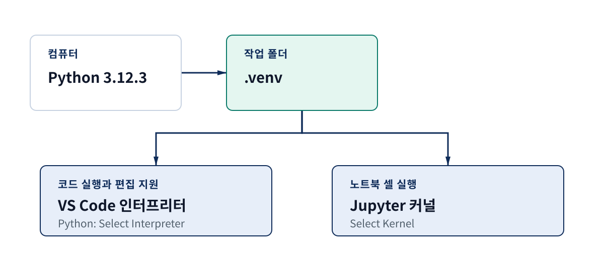
설명·코드·결과를 한 파일에 담는 문서
설명이나 코드를 입력하는 한 칸
셀의 코드를 읽고 결과를 돌려주는 프로그램
모든 셀을 위에서부터 실행하는 버튼
따로 내려받는 파일이 아니라 VS Code 탐색기에서 새로 만듭니다
강의용 폴더 안에 새 폴더 만들기
environment-check.ipynb
파일을 누르면 노트북 편집기가 열림
커널을 고르고 코드를 실행한 뒤 세 줄의 결과를 확인합니다
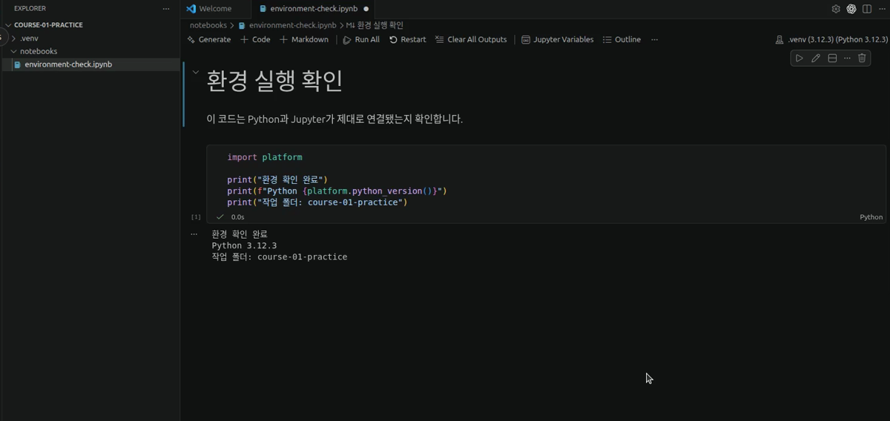
Python 버전 숫자는 컴퓨터에 따라 다를 수 있습니다
4. 설치 상태 확인
전부 다시 설치하지 말고 처음 막힌 곳만 찾습니다
강의 화면과 내 화면 비교
처음 보이지 않는 곳 확인
바로 앞 단계부터 다시 시도
프로그램을 모두 지우기 전에 문제가 생긴 곳부터 살펴봅니다
폴더명이 없다
Codex가 열리지 않는다
상세 리포트 표 3
작업 화면, Python 환경, 실행 결과를 이어서 확인합니다
작업 화면
Python 환경
5. 마무리 정리
화면에서 자주 다시 보게 될 말만 간단히 정리합니다
VS Code에 기능을 더하는 프로그램
명령어를 글자로 입력하는 창
프로젝트별 Python 도구를 따로 모아 둔 공간
노트북 셀의 코드를 실행하는 프로그램
상세 리포트 표 4
화면과 설치 명령은 업데이트에 따라 달라질 수 있습니다
| 공식 문서 | 확인할 내용 |
|---|---|
| OpenAI Codex | 확장 기능과 CLI 설치·로그인 |
| Visual Studio Marketplace | Codex·Python·Jupyter의 게시자와 식별자 |
| VS Code | 다운로드·Python 환경·Jupyter 사용법 |
| Python | 설치 파일과 venv 사용법 |
상세 리포트 표 5 · 확인일 2026-08-26
정리
course-01-practice를 VS Code에서 열었다
공식 확장 기능과 CLI를 확인했다
.venv를 선택하고 짧은 코드를 실행했다